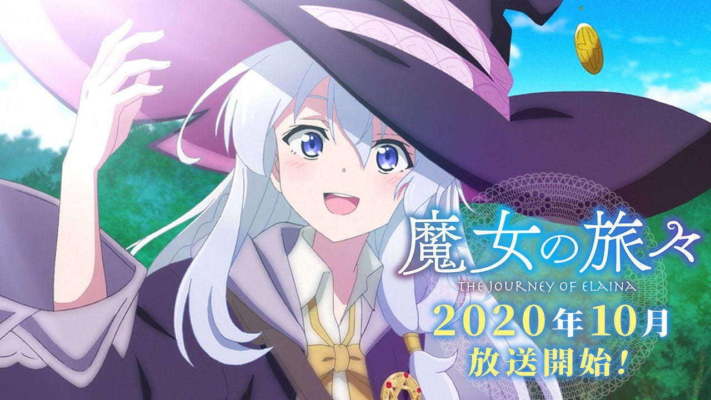
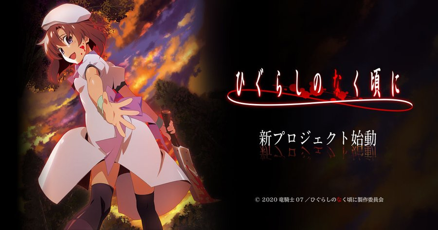

New Up Coming Animes
Once upon a time, there was a witch named Elaina, who set off on a journey across the world. Along the way, she would meet all kinds of people, from a country full of witches to a giant in love with his own muscles—but with each meeting, Elaina would become a small part of their story, and her own world would get a little bit bigger.

Keiichi Maebara has transferred from the city to the village of Hinamizawa that lies deep in the wilderness. The village was spared from a plan to build a dam that would have sunk it under a lake, and it is now surrounded by nature and following its ancient customs. Keiichi makes new friends there and lives an ordinary life. But once a year, Hinamizawa village celebrates its festival, Watanagashi, and with it Keiichi's calm days are over, and a chain of unending tragedy begins
